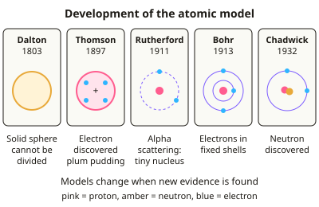

GCSE Chemistry · Topic 11
Working scientifically and maths skills
Working scientifically and maths skills are tested throughout every chemistry paper, so this topic can earn you a lot of marks.
We will look at how models and theories develop, how to plan investigations and use apparatus safely, and how to present data in tables and graphs.
Then we cover uncertainty and evaluation, and the calculations you need: ratios, percentages, unit conversions and rearranging equations.
- 6 subtopics
- 243 questions
- Free: 11.1 notes and 10 questions
In this topic
- 11.1Models, theories and evidence in chemistryFree below · 25 questions
- 11.2Planning investigations: variables, hypotheses and risk assessmentOpen in Full Marks · 37 questions
- 11.3Practical techniques and apparatus (measuring, heating, gas collection, safety)Open in Full Marks · 73 questions
- 11.4Presenting data: tables, graphs, significant figures and standard formOpen in Full Marks · 28 questions
- 11.5Uncertainty, accuracy, precision, repeatability and evaluating resultsOpen in Full Marks · 36 questions
- 11.6Chemistry calculations: ratios, percentages, unit conversions and rearranging equationsOpen in Full Marks · 44 questions
11.1 · Free notes
Models, theories and evidence in chemistry

Key points
- A model is a simplified representation used to explain observations and make predictions. Models are changed or replaced when new evidence does not fit them.
- A hypothesis is a testable explanation for observations. A theory is an explanation supported by a large body of tested, repeatable evidence.
- Dalton (1803) pictured atoms as tiny, solid, indivisible spheres. Thomson's discovery of the electron (1897) led to the plum pudding model: a ball of positive charge with electrons embedded in it.
- In the alpha scattering experiment (Geiger and Marsden, interpreted by Rutherford, 1909–1911), alpha particles were fired at thin gold foil. Most passed straight through, so the atom is mostly empty space.
- A few alpha particles were deflected through large angles and very few bounced back. This showed a small, dense, positively charged nucleus, which replaced the plum pudding model with the nuclear model.
- Bohr (1913) proposed that electrons orbit the nucleus in fixed energy levels (shells). Chadwick (1932) provided evidence for the neutron, which explained the mass of the nucleus.
- The nucleus has a radius of about 1/10 000 of the atom's radius. The atom's radius is about 1 × 10⁻¹⁰ m (0.1 nm) and the nucleus's is about 1 × 10⁻¹⁴ m.
- Mendeleev (1869) ordered elements by atomic weight and properties. He left gaps for undiscovered elements and predicted their properties. When elements such as germanium were found to match, his table was accepted.
- Peer review: independent experts check methods and conclusions before publication. Other scientists then try to reproduce the results. Claims are trusted only when the evidence is repeatable and reproducible.
- Every model has limitations. Ball-and-stick models show bonds as solid sticks and give the wrong relative sizes. Dot-and-cross diagrams do not show 3D shape. Examiners want you to state what a model shows well and what it cannot show.
- Theories about the early atmosphere (volcanic outgassing, oceans forming, oxygen from photosynthesis) are uncertain because the evidence is billions of years old. In 'how did the model change' answers, give the old model, the new evidence and the new model.
In more detail
- Model vs theory: a model is a simplified picture (e.g. ball and stick); a theory is a well-tested explanation supported by lots of evidence (e.g. collision theory).
- Why models change: new evidence from better equipment, like the alpha scattering experiment, can show that a model is wrong or incomplete.
- Predictions test theories: Mendeleev's predictions of undiscovered elements were confirmed, which made scientists accept his periodic table.
- Limitations of models: dot and cross diagrams do not show shape; 2D displayed formulae do not show bond angles; particle diagrams show particles as hard spheres.
Practice
Models, theories and evidence in chemistry: 10 questions
Pick an answer to check it, or open the answer for the explanation.
1. In the alpha scattering experiment most alpha particles passed straight through gold foil. What did this show?
- Electrons are heavier than alpha particles
- The nucleus is negatively charged
- Atoms are mostly empty space
- Atoms are positively charged throughout
Show answer
C: Atoms are mostly empty space. Most particles were undeflected, so most of the atom is empty space. Only the tiny nucleus deflects alpha particles.
2. A few alpha particles were deflected through large angles by gold foil. What did Rutherford conclude?
- The foil was too thin to work
- The atom has a small, dense, positive nucleus
- Neutrons repel alpha particles
- Electrons are spread through the atom
Show answer
B: The atom has a small, dense, positive nucleus. Large deflections need a concentrated positive charge repelling the positive alpha particles: a tiny, dense, positively charged nucleus.
3. Which describes the plum pudding model of the atom?
- A solid, indivisible sphere
- Electrons orbiting a central nucleus
- A nucleus of protons and neutrons
- A positive sphere with electrons embedded in it
Show answer
D: A positive sphere with electrons embedded in it. Thomson proposed a ball of positive charge with negative electrons scattered through it. Rutherford's results disproved it.
4. Which scientist suggested that electrons orbit the nucleus in fixed energy levels (shells)?
- Bohr
- Chadwick
- Thomson
- Dalton
Show answer
A: Bohr. Niels Bohr (1913) adapted the nuclear model so that electrons occupy shells at set distances from the nucleus.
5. Why did scientists come to accept Mendeleev's periodic table?
- He ordered elements by atomic number
- His predictions for undiscovered elements were later confirmed
- He included all the noble gases
- He had discovered protons
Show answer
B: His predictions for undiscovered elements were later confirmed. He left gaps and predicted properties of missing elements. When elements such as germanium matched, the table gained support.
6. What is the main purpose of peer review?
- Independent experts check methods and conclusions before publication
- To prove a theory true forever
- To make a scientist's results more famous
- To decide which scientist is best known
Show answer
A: Independent experts check methods and conclusions before publication. Other experts scrutinise the work for errors, bias and invalid conclusions before it is published, so claims can be trusted.
7. Which is a limitation of a ball-and-stick model of methane?
- Bonds appear as solid sticks but are really shared electron pairs
- It cannot show which atoms are bonded
- It cannot show the shape of the molecule
- It cannot show how many atoms there are
Show answer
A: Bonds appear as solid sticks but are really shared electron pairs. The model shows shape and connectivity well, but the sticks are not real objects and the model shows no electrons or true sizes.
8. Which particle did James Chadwick provide evidence for in 1932?
- Positron
- Proton
- Neutron
- Electron
Show answer
C: Neutron. Chadwick showed that an uncharged particle with a mass similar to the proton exists, explaining the extra mass of nuclei.
9. New experimental results do not fit an accepted model. What should scientists do?
- Check and repeat the results; if reliable, modify the model
- Ignore them because the model is established
- Publish only the results that fit
- Delete the data
Show answer
A: Check and repeat the results; if reliable, modify the model. Models are changed when reliable, repeatable evidence contradicts them. Ignoring or hiding data is not scientific.
10. Which statement about a scientific hypothesis is correct?
- It is the final result of an investigation
- It cannot be changed
- It is a proven fact
- It is a testable proposed explanation for observations
Show answer
D: It is a testable proposed explanation for observations. A hypothesis is a proposed explanation that can be tested by experiment. It may be supported or rejected by the evidence.
Keep going in Full Marks
Full Marks has 25 questions on Models, theories and evidence in chemistry (15 more than here), set out in practice levels. You also get notes and 3D models for all 6 subtopics of Working scientifically and maths skills, plus games, timed exams and past papers.